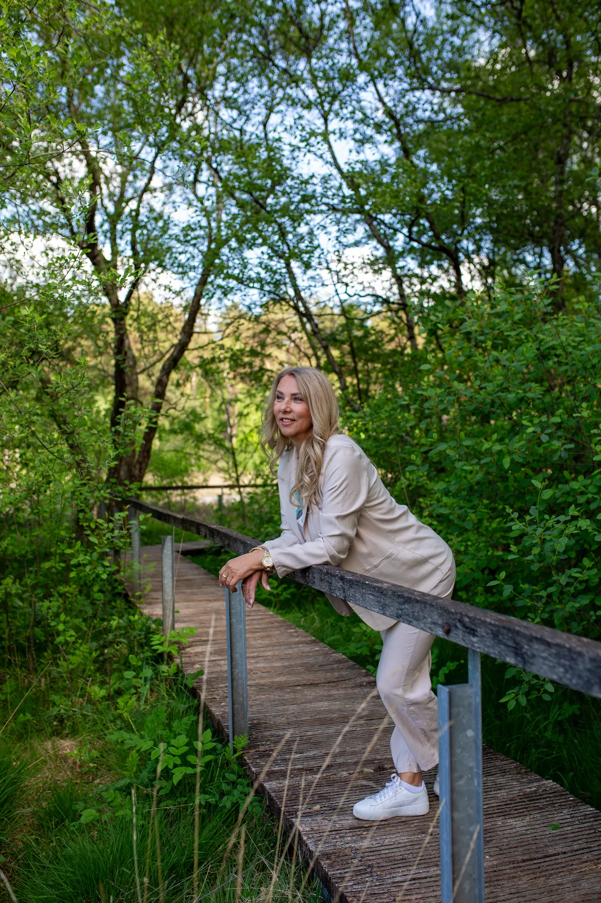
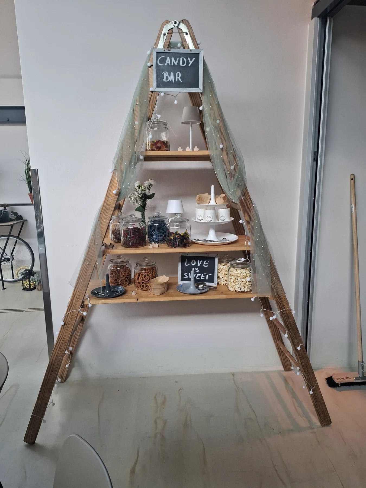

Schön, dass ihr da seid · Über mich
Ich bin Britta.
Und ich höre gerne genau hin.
Menschen, ihre Geschichten und die kleinen Dinge dazwischen – genau das interessiert mich. Mit Herz, Verstand und einer guten Portion Ruhrpott-Charme finde ich Worte, die zu euch passen.
Lasst uns kennenlernen ↗
Die Frau hinter den Worten
Direkt im Gespräch.
Fein im Zuhören.
Ich mag keine aufgesetzten Rollen und keine leeren Floskeln. Lieber stelle ich Fragen, lache mit euch und höre auch auf das, was zwischen den Zeilen steckt. Denn genau dort liegen oft die Geschichten, die einen Menschen oder ein Paar ausmachen.
Als freie Rednerin gestalte ich Zeremonien mit Gefühl, Humor und Tiefgang. Mal darf es leicht sein, mal still. Entscheidend ist für mich, dass es zu euch und eurem Anlass passt.

Kopf und Herz
Viele Facetten.
Eine Haltung.
Meine Erfahrung in der kaufmännischen Führung hat mich gelehrt, klar zu denken, Verantwortung zu übernehmen und Dinge verlässlich zu organisieren. Das gibt auch meiner kreativen Arbeit als Rednerin ein gutes Fundament.
Als Autorin von „Der Zebra-Pfad“ und zertifizierte Mentaltrainerin beschäftige ich mich mit Perspektiven und der Frage, was Menschen guttut. Ich glaube nicht an den einen richtigen Weg. Ich möchte Möglichkeiten zeigen und euch den Raum lassen, euren eigenen zu finden.
Auch in meinen „Seelensnacks“ und im Generationen-Talk geht es mir um genau das: Gedanken teilen, neugierig bleiben und miteinander ins Gespräch kommen – gerne mit einem Augenzwinkern.
Mein Leitmotiv
Alles kann. Nichts muss.
Ihr entscheidet selbst.
Eine Haltung aus meinem Buch „Der Zebra-Pfad“ – und eine, die auch meine Arbeit als Rednerin begleitet. Eure Geschichte gibt die Richtung vor.
Und jetzt zu euch
Erzählt mir,
was euch ausmacht.
Ob freie Trauung, Abschied oder ein Willkommen im Leben: Lasst uns ganz unkompliziert kennenlernen und schauen, ob es menschlich passt.
Kontakt aufnehmen ↗